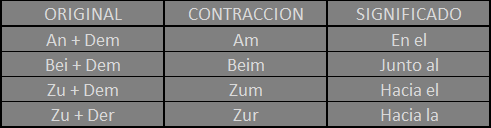

Contracciones
En el aleman hay contracciones como en el ingles.. en el ingles por ejemplo esta "I am" pero contraida seria "I'm", lo mismo con "You are" pero contraida seria "You're" y muchos mas.. en el aleman las contracciones mas comunes y basicas son:
